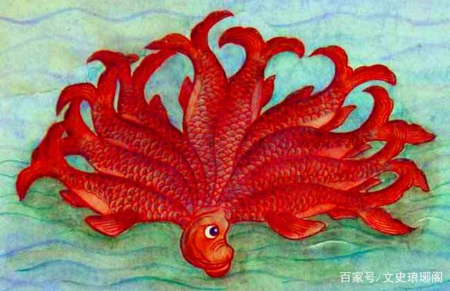
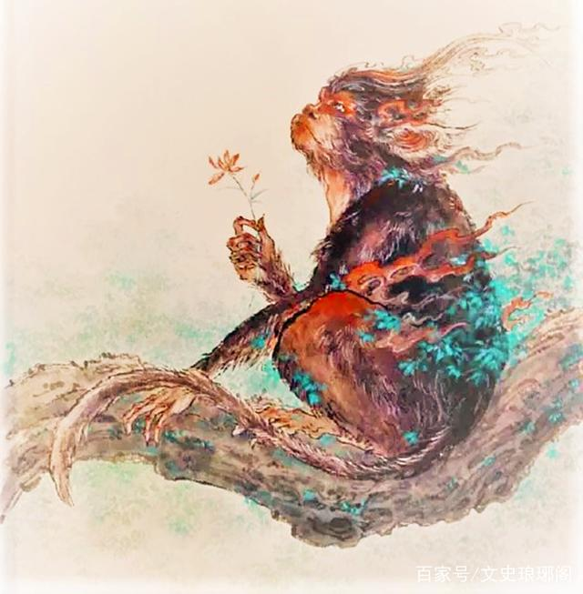

在人们的普遍认知中，上古奇书《山海经》是一部神秘的九州地理志，也是一部神话传说的经典著作。据统计，《山海经》中出现了500多种珍禽异兽，并准确描述了它们的外形和生活习性。
" 有一些细心的《山海经》爱好者发现，《山海经》在描述这些珍禽异兽的同时，始终不离“食”这个字眼。不仅记载了哪些植物、神兽甚至是矿石都可以“食用”，还说明了其味道和医疗效果，堪称最古老的《舌尖上的中国》。难道《山海经》除了是一本远古地理书和神话巨著，还是一本汇集华夏先民饮食文化的食谱？
《山海经·北山经》中记载了神兽“何罗鱼”，说它一个头十个身躯，可以幻化成鸟。“何罗鱼”的肉味道非常鲜美，食用后可以治愈皮肤病。许多考古学家认为，这种怪鱼就是现代常见的章鱼或者鱿鱼。章鱼又被称为八爪鱼，其实它共有十条触手。为什么海洋生物会在内陆地区被发现，考古学家推测与史前大洪水有关。 《山海经》还记载了一种叫“横公鱼”的异兽，并且详细说明了食谱。传说中“横公鱼”在石湖中生活，以石块为食，凶猛异常。它白天为鱼身，晚上则幻化为人身上岸游荡。虽然这种鱼味道鲜美，但砍不动、煮不死，除非在锅中放入两颗乌梅混煮才行，食用可以驱邪。“横公鱼”我们至今还没有发现原型，可能因为味道太鲜美，早早就被吃绝种了吧。
《山海经·南山经》记载在鹊山上有异兽狌狌，它长着一对白色的耳朵，直立行走，能言千年历史。狌狌不怕人，因此非常容易捕捉。吃了它的肉，能变得身轻体健，快步如飞。狌狌的原型也已经被考古学家找到，它就是现代的猩猩，只不过被古人神化渲染了而已。那么问题来了：难道远古时期中国也有猩猩吗？要不然华夏先民怎么知道它容易捕捉，而且可以食用呢？